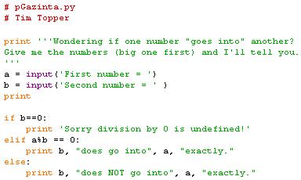

Write a program that accepts two numbers, and outputs a message telling the user whether the second number divides exactly into the first or not.
What happens when you enter 0 for the second number? This is our first example of a runtime error. Add a test to this program to avoid the error condition.
Sample runs:
Wondering if one number "goes into" another?
Give me the numbers (big one first) and I'll tell you.
First number = 8
Second number = 2
2 does go into 8 exactly.Wondering if one number "goes into" another?
Give me the numbers (big one first) and I'll tell you.
First number = 8
Second number = 3
3 does NOT go into 8 exactly.Wondering if one number "goes into" another?
Give me the numbers (big one first) and I'll tell you.
First number = 8
Second number = 0
Sorry division by 0 is undefined!